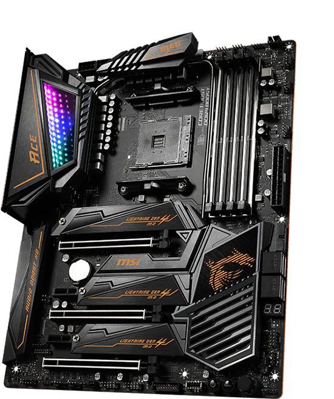

La CPU è il cervello dell’elaboratore.
È la componente che si occupa di coordinare gli altri apparati, e provvede
a eseguire i programmi.
È composta dall'unità aritmetica e logica (ALU), dai registri e dall’unità di controllo (CU).
Scheda Madre
La Scheda Madre è un componente con i circuiti necessari al funzionamento
del computer e gestire i dati in entrata ed uscita.

Scheda Video
La Scheda Video ha lo scopo di elaborare del segnale video, ovvero generare in uscita un segnale che permette
di mostrare una immagine sullo schermo.
RAM e ROM
La RAM (Random Access Memory) è una tipologia di memoria volatile
ad accesso casuale.
La ROM (Read Only Memory) è una tipologia di memoria non volatile
usata nei computer e in altri dispositivi elettronici che permette
di scrivere le informazioni da conservare in maniera permanente.
Dissipatore
Il dissipatore è un modulo in metallo montato su circuiti integrati che sprigionano
particolarmente calore e che quindi consente l'abbassamento e il mantenimento
della temperatura di essi evitandone il malfunzionamento.
Alimentatore
L'Alimentatore un apparato elettronic che stabilizza un segnale elettrico in
entrata e lo converte da Corrente Alternata (220V Domestica) ad una Corrente Continua,
necessario per alimentare correttamente i componenti del PC.
Memoria di massa
Possono essere (es. SSD, HDD, Chiavette USB, Micro SD ecc.)
La Memoria di massa è un tipo di memoria, di queste possono essercene varie tipologie
(SSD, HDD, Schede SD, USB Drives, ecc.) il cui scopo è raccogliere grandi quantità di dati
in maniera permanente e quindi permetterne la lettura e la scrittura.
Periferiche
Le Periferiche sono gli strumenti utile per interfacciarsi del PC, come
schermo, tastiera, mouse, cuffie, stampanti ecc.